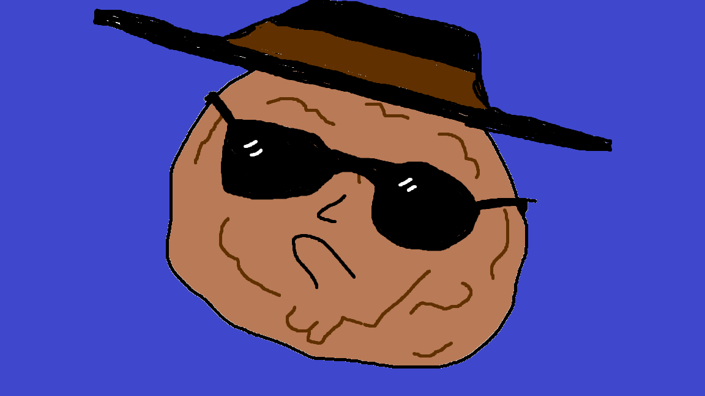
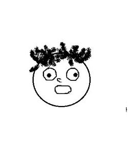
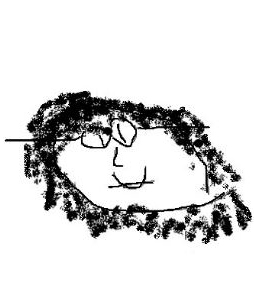

Bob and the Company

Bob, the founder. A true visionary, he was originally made to be served for pasta in Whiterun. But unlike the other meatballs, Bob had big ideas, and a dream. A dream to go out and explore the world. Eventually, he left his bowl and got out of Whiterun, moving south towards Falkreath. During his journey he encountered many trolls, bandits, dragons, and a pesky dragonborn, but nothing could stop him, he had a burning feeling that he was destined for greatness, and nothing in the world would stand in his way. He was an adventurer, until he took an arrow in the knee. Thomas the Tank engine had spotted the young meatball and decided to incapacitate him in order to promptly rob him. Thomas took all of Bobs possessions and left him in a cave to die, alone. And that's when Bob was struck with innovation, that cave inspired him, and thus he decided to start his mining business. He took a stimpak he found conveniently in that cave and healed his crippled leg. He continued his journey, this time heading towards Markarth and founded his new company: Meatballs Inc. He started small, with just one base of operations and 20 slaves. Fast forward 150 years later and he was able to consistently grow his company. Now using about 5000 slaves in each base of operations… until a man known as Viktor Reznov organized an escape and completely ruined Bobs plans… and then people began seeing slavery as a bad thing which worsened situations even more for Bob. But Bob wasn't one to give up easily. He was a man of action, and thus he thought… if he can't exploit the basic rights of a normal human… then he could try and exploit the rights of mother earth. And thus he began to reform his company. He tore down trees, blew up mines, burnt down forests, took down 3 of the 16 colossi and overloaded the chunks of his minecraft server in order to duplicate his items. After 10 years of random operations, he took a break, and decided to reflect upon his life decisions.. Something was missing for him… but what? One day while flying his dragon he crash landed into the ice and was frozen solid for an entire millenium. While frozen, he pondered… wondered what was missing in his life now. Suddenly, it finally, it came to him: He missed his mining roots. Now, reborn with a new sense of purpose he escaped the ice and went out into the new millennium, ready to start a new dream. But the world had changed, he grew up a medieval meatball, and was now stuck in the modern times. That's where the sons come in, and with their recruitment and a new fire to keep the mining business in order, Köttbullar and Sons was created.
The Sons
The sons are the best partners that Bob could have asked for. They are cunning, thoughtful, resourceful and most importantly, they have no moral code whatsoever! After Bob awoke from the ice and went back to live in a society, he found himself dumbfounded by the new ways of the world. The sons were hired in order to help him learn how to survive in the world, and in order to help take the company into new heights it had never seen before. Finally achieving a new employee high of 5 workers instead of 4.Gabriel

Jacinthe

Sebastien
The rest of the team
Lets be honest, nobody really cares about our lazy excuse of a staff. They might be people but they sold their lives and souls to us so whatever.Our facilities